Convolution filters II - Gaussian blur, sharpening and edge detection#
This page will explore additional foundational filters which use convolutional kernels, implementing them first with NumPy and SciPy, and then with Scikit-image. As usual, we begin with some imports:
# Library imports.
import numpy as np
import matplotlib.pyplot as plt
import scipy.ndimage as ndi
import scipy.stats as sps
import skimage as ski
from mpl_toolkits.mplot3d import Axes3D
# Set 'gray' as the default colormap
plt.rcParams['image.cmap'] = 'gray'
# Set NumPy precision to 2 decimal places
np.set_printoptions(precision=2)
# Custom functions/variables for illustrations, to quickly report image attributes, and for exercises.
from gaussian_illustration import make_gaussian_kernel
from show_attributes import show_attributes
from hints import secret_val
from hints import hint_krazy_kernel_1, hint_krazy_kernel_2, hint_edgy
Gaussian filtering#
An important kernel-based filter with, let’s be honest, a pretty cool name is the Gaussian filter. You may recognise the name from the famous Gaussian distribution, which we plot below:
# Plot a normal/Gaussian distribution.
x = np.linspace(-4, 4, 10_000)
y = sps.norm().pdf(x)
plt.plot(x, y)
plt.xlabel('X value')
plt.ylabel('Probability')
plt.xticks([])
plt.yticks([]);
This is the well-known normal distribution, which is sometimes described as having a “bell-shape”. We will talk in more detail further down the page about why the Gaussian filter has its name. For now, take a look at this fancy kernel:
# A fancy kernel.
gaussian_like_kernel = np.array([[0.06, 0.12, 0.06],
[0.12, 0.25, 0.12],
[0.06, 0.12, 0.06]])
gaussian_like_kernel
array([[0.06, 0.12, 0.06],
[0.12, 0.25, 0.12],
[0.06, 0.12, 0.06]])
Imagine this kernel plotted in a 3D space. It is in the shape of (3, 3), so imagine that the “floor” of the 3D plot is a 3-by-3 grid, with the integer index labels shown in the horizontal (\(x\) and \(y\)-axis) directions. Imagine further that we plot the kernel element values in the vertical direction, on the \(z\)-axis.
So on this plot, in the vertical direction, our graph will be highest where the kernel values are highest (e.g. for the central element of 0.25), and lowest where the kernel elements are lowest (e.g. in the corners for the values of 0.06).
Such a plot is shown below. A red surface connects the space in between each kernel value, to make the pattern between the individual elements clearer. The kernel values themselves are shown as dark blue text. The axis ticks show the integer index location of the kernel values, in the gaussian_like_kernel NumPy array:
# Plot the fancy kernel, with a convenience function.
def kernel_plot(kernel, surface=True, elev=30, azim=-45, text=True):
x = np.arange(kernel.shape[0])
y = np.arange(kernel.shape[1])
X, Y = np.meshgrid(x, y, indexing='ij')
Z = kernel
fig = plt.figure(figsize=(9,9))
ax = fig.add_subplot(111, projection='3d')
if surface == True:
ax.plot_surface(X, Y, Z, color='red')
else:
ax.plot_wireframe(X, Y, Z, color='red')
ax.set_xticks(x)
ax.set_yticks(y)
ax.set_xlabel('Integer Index (axis = 0)')
ax.set_ylabel('Integer Index (axis = 1)')
ax.set_zlabel('Kernel Element Value', labelpad=1)
ax.view_init(elev=elev, azim=azim)
if azim == 0:
ax.set_zlabel("")
ax.set_zticks([])
if text == True:
for i in np.arange(kernel.shape[0]):
for j in np.arange(kernel.shape[1]):
ax.text(i, j, kernel[i, j],
str(kernel[i, j].round(2)),
color='darkblue')
# Make the plot.
kernel_plot(gaussian_like_kernel);
Now, it may not be immediately apparent to some readers what this plot has to do with a Gaussian distribution. For now let’s use “Gaussian” very loosely - for the moment all we will take from it is that, like a Gaussian distribution, at the center the kernel has high values, then the values fall off as we get nearer to the sides. Let’s warmly refer to the graph as the “red mountain”.
The kernel is shown, via the “raw” NumPy output, in the cell below. Compare this to the plot, to make sure you understand the visualisation. Remember that the numbers on each axis are the integer index locations of the NumPy array. And the vertical height of the red surface is the value of the kernel element at each row/column integer index location:
# Show the kernel again, in NumPy, for comparison to the plot.
gaussian_like_kernel
array([[0.06, 0.12, 0.06],
[0.12, 0.25, 0.12],
[0.06, 0.12, 0.06]])
If you prefer, you can view the NumPy array kernel with prettier graphics below:
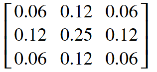
Just as final comparison between the NumPy array kernel and the plot, here is the “red mountain” viewed from directly above, with the NumPy array kernel, in pretty graphics, shown to the right-hand side of the plot:
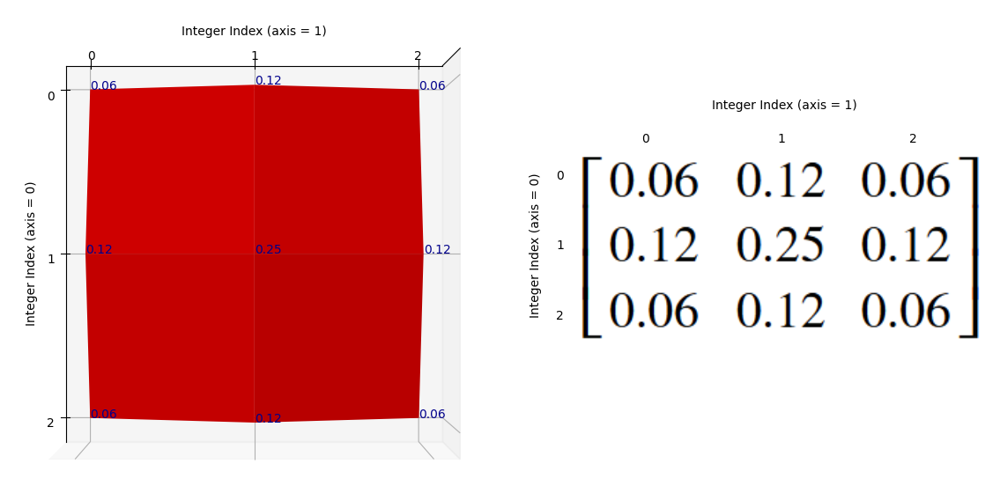
Remember that the kernel has only 9 values (shown as blue text on the plot), so there are no values in between the array values. If you prefer, we can visualise the kernel using a wireframe, to make it clearer that there are no values in between the kernel elements (e.g. in between the points where there is blue text):
# Plot the fancy kernel.
kernel_plot(gaussian_like_kernel, surface=False)
Let’s refer to the highest point on this kernel surface as the “crimson peak”. The crimson peak is the central kernel element of 0.25, at row/column integer index location [1, 1]:
# The central kernel value, at the crimson peak - check that you can also see this on the graph above.
gaussian_like_kernel[1, 1]
np.float64(0.25)
Essentially, if we filter using this kernel, we “walk” this kernel through the image, with the top of the “crimson peak” centered on a given pixel. The central pixel value is then replaced with an average of the pixels in the neighbourhood, but the contribution of the other pixels in the neighbourhood to the averge is weighted by the height of the “red mountain” at that pixel.
So array pixels which fall under higher points of the kernel’s “red mountain” will exert more influence on the weighted average, and pixels falling under lower points will exert a weaker influence. The central pixel, laying under the crimson peak, will exert the most influence on the weighted average.
Let’s use this kernel to filter the following image array:
# Make a small image array.
small_square = np.zeros((20, 20))
small_square[9:11, 9:11] = 1
print(small_square)
plt.imshow(small_square);
[[0. 0. 0. 0. 0. 0. 0. 0. 0. 0. 0. 0. 0. 0. 0. 0. 0. 0. 0. 0.]
[0. 0. 0. 0. 0. 0. 0. 0. 0. 0. 0. 0. 0. 0. 0. 0. 0. 0. 0. 0.]
[0. 0. 0. 0. 0. 0. 0. 0. 0. 0. 0. 0. 0. 0. 0. 0. 0. 0. 0. 0.]
[0. 0. 0. 0. 0. 0. 0. 0. 0. 0. 0. 0. 0. 0. 0. 0. 0. 0. 0. 0.]
[0. 0. 0. 0. 0. 0. 0. 0. 0. 0. 0. 0. 0. 0. 0. 0. 0. 0. 0. 0.]
[0. 0. 0. 0. 0. 0. 0. 0. 0. 0. 0. 0. 0. 0. 0. 0. 0. 0. 0. 0.]
[0. 0. 0. 0. 0. 0. 0. 0. 0. 0. 0. 0. 0. 0. 0. 0. 0. 0. 0. 0.]
[0. 0. 0. 0. 0. 0. 0. 0. 0. 0. 0. 0. 0. 0. 0. 0. 0. 0. 0. 0.]
[0. 0. 0. 0. 0. 0. 0. 0. 0. 0. 0. 0. 0. 0. 0. 0. 0. 0. 0. 0.]
[0. 0. 0. 0. 0. 0. 0. 0. 0. 1. 1. 0. 0. 0. 0. 0. 0. 0. 0. 0.]
[0. 0. 0. 0. 0. 0. 0. 0. 0. 1. 1. 0. 0. 0. 0. 0. 0. 0. 0. 0.]
[0. 0. 0. 0. 0. 0. 0. 0. 0. 0. 0. 0. 0. 0. 0. 0. 0. 0. 0. 0.]
[0. 0. 0. 0. 0. 0. 0. 0. 0. 0. 0. 0. 0. 0. 0. 0. 0. 0. 0. 0.]
[0. 0. 0. 0. 0. 0. 0. 0. 0. 0. 0. 0. 0. 0. 0. 0. 0. 0. 0. 0.]
[0. 0. 0. 0. 0. 0. 0. 0. 0. 0. 0. 0. 0. 0. 0. 0. 0. 0. 0. 0.]
[0. 0. 0. 0. 0. 0. 0. 0. 0. 0. 0. 0. 0. 0. 0. 0. 0. 0. 0. 0.]
[0. 0. 0. 0. 0. 0. 0. 0. 0. 0. 0. 0. 0. 0. 0. 0. 0. 0. 0. 0.]
[0. 0. 0. 0. 0. 0. 0. 0. 0. 0. 0. 0. 0. 0. 0. 0. 0. 0. 0. 0.]
[0. 0. 0. 0. 0. 0. 0. 0. 0. 0. 0. 0. 0. 0. 0. 0. 0. 0. 0. 0.]
[0. 0. 0. 0. 0. 0. 0. 0. 0. 0. 0. 0. 0. 0. 0. 0. 0. 0. 0. 0.]]
We use use scipy.ndimage.correlate() to “walk” our kernel over every pixel in the image, multiply each array pixel value under the kernel by the corresponding kernel value, then take the sum of the result to replace the central pixel value:
# Apply the `gaussian_like_kernel` to filter the image.
gaussian_like_filtered_small_square = ndi.correlate(small_square,
weights=gaussian_like_kernel)
# Plot comparison images.
plt.figure(figsize=(12, 4))
plt.subplot(1, 3, 1)
plt.title('Original')
plt.imshow(small_square)
plt.subplot(1, 3, 2)
plt.title('Gaussian-like Filter \n(3, 3) Kernel')
plt.imshow(gaussian_like_filtered_small_square);
Blurry! So to recap, we have averaged within a 3-by-3 pixel neightbourhood, replacing the central pixel value with a weighted average of all the pixel values in the neighbourhood. The weights are larger for pixels closer to the central value of the kernel (e.g. closer to the center of the “crimson peak” on the plot above).
This type of filtering is called Gaussian filtering because the kernel element values approximate a Gaussian (e.g. normal) distribution. The plot of the kernel above, with the “red mountain” may not look much like the normal distribution to you at the moment, but bear with us.
To see the Gaussian nature of this filtering operation, let’s take a look at another, larger kernel below - it has shape (9, 9):
# Another kernel.
big_gaussian_kernel = make_gaussian_kernel(9)
big_gaussian_kernel.round(2)
array([[0. , 0. , 0. , 0. , 0. , 0. , 0. , 0. , 0. ],
[0. , 0. , 0. , 0.01, 0.01, 0.01, 0. , 0. , 0. ],
[0. , 0. , 0.01, 0.02, 0.03, 0.02, 0.01, 0. , 0. ],
[0. , 0.01, 0.02, 0.05, 0.07, 0.05, 0.02, 0.01, 0. ],
[0. , 0.01, 0.03, 0.07, 0.09, 0.07, 0.03, 0.01, 0. ],
[0. , 0.01, 0.02, 0.05, 0.07, 0.05, 0.02, 0.01, 0. ],
[0. , 0. , 0.01, 0.02, 0.03, 0.02, 0.01, 0. , 0. ],
[0. , 0. , 0. , 0.01, 0.01, 0.01, 0. , 0. , 0. ],
[0. , 0. , 0. , 0. , 0. , 0. , 0. , 0. , 0. ]])
Can you see any pattern in the arrangement of the numbers? Where are the high numbers, where are the low numbers? The big_gaussian_kernel NumPy array is shown below, in prettier form, to aid your ruminations:

We will also plot this kernel in 3D, as with the last kernel. Again, the integer index locations of the array form the horizontal (\(x\) and \(y\)) axis values, and the values within the array are plotted on the vertical (\(z\)) axis.
# Show the new, bigger gaussian kernel.
kernel_plot(big_gaussian_kernel, text=False)
Again, if you prefer, we can view the kernel as a wireframe plot, which we show in the cell below. We first show the NumPy view of the array again, above the plot. The plot looks messy when the kernel element values (blue text) are also shown, but we show them for easy comparison to the big_gaussian_kernel NumPy array. If you are running interactively, you can set text = False in the plotting function and re-run the cell, to switch the blue numbers off, if you wish:
# Compare the NumPy array to the plot.
print("\n`big_gaussian_kernel` NumPy view:\n\n",big_gaussian_kernel.round(2))
kernel_plot(big_gaussian_kernel, surface=False)
plt.title('`big_gaussian_kernel` \nRed Mountain View:');
`big_gaussian_kernel` NumPy view:
[[0. 0. 0. 0. 0. 0. 0. 0. 0. ]
[0. 0. 0. 0.01 0.01 0.01 0. 0. 0. ]
[0. 0. 0.01 0.02 0.03 0.02 0.01 0. 0. ]
[0. 0.01 0.02 0.05 0.07 0.05 0.02 0.01 0. ]
[0. 0.01 0.03 0.07 0.09 0.07 0.03 0.01 0. ]
[0. 0.01 0.02 0.05 0.07 0.05 0.02 0.01 0. ]
[0. 0. 0.01 0.02 0.03 0.02 0.01 0. 0. ]
[0. 0. 0. 0.01 0.01 0.01 0. 0. 0. ]
[0. 0. 0. 0. 0. 0. 0. 0. 0. ]]
Again, to make the relationship between the NumPy array and the graph as clear as possible, here is the “red mountain” viewed from directly above, with the big_gaussian_kernel array shown to its right:
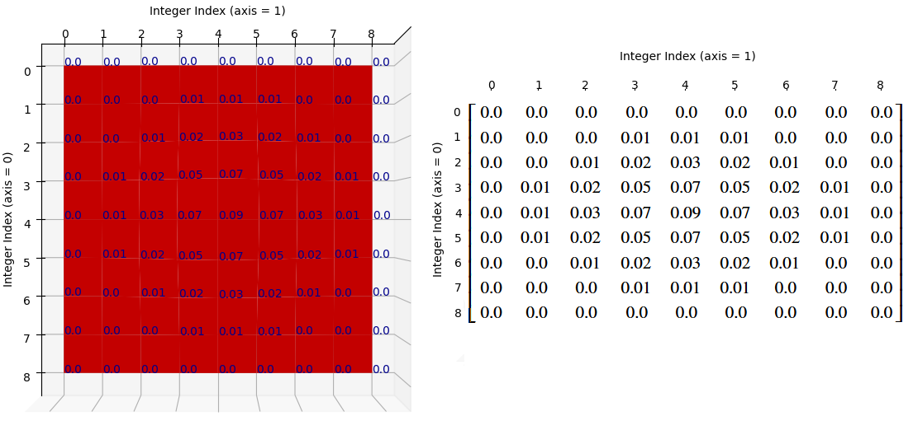
You may (or may not) recognise the “red mountain” - when we plot the big_gaussian_kernel - as a multivariate Gaussian distribution. Here is one way of writing the formula for the multivariate Gaussian distribution:
\( \Large p(x, y) = \frac{1}{2 \pi \sigma_x \sigma_y} \ e^{-\frac{1}{2} (\frac{(X - \mu_x)^2} {\sigma_x^2} + \frac{(Y - \mu_y)^2} {\sigma_y^2})} \)
Essentially, the function takes the input variables \(x\) and \(y\), a mean (\(\mu\)) and standard deviation (\(\sigma\); e.g. spread) for each variable, and returns a probability of a particular combination of \(x\) and \(y\). Here is a plot of a prototypical multivariate Gaussian, where both input variables have a mean of 0, a spread of 1, and are uncorrelated with each other:
# Plot a multivariate Gaussian, where both x and y have a mean of 0 and variance of 1.
x = np.linspace(-5, 5, 10_00)
y = np.linspace(-5, 5, 10_00)
X, Y = np.meshgrid(x,y)
mu_x = 0
mu_y = 0
sigma_x = 1
sigma_y = 1
Z = 1/(2 * np.pi * sigma_x * sigma_y) * np.exp(-0.5 * ((X - mu_x)**2 / sigma_x**2 + (Y - mu_y)**2 / sigma_y**2))
# Generate the plot.
fig = plt.figure(figsize=(8, 8))
ax = plt.axes(projection='3d')
ax.plot_surface(X, Y, Z)
ax.set_xlabel('X')
ax.set_ylabel('Y')
ax.set_zlabel('Probability', labelpad=1)
ax.set_title("Multivariate Gaussian Distribution");
Here is the plot of big_gaussian_kernel again, for comparison to the perfect Gaussian shown in the image above:
# Show the plot of `big_gaussian_kernel` again.
kernel_plot(big_gaussian_kernel, text = False)
The “crimson peak” of the big_gaussian_kernel is spikier than for the prototypical Gaussian, simply because it is centered on a single pixel (creating the spike at the “crimson peak”). For the smaller gaussian_like_kernel the whole 3D plot appeared more “spiky” as it has less array elements. In the bigger (9, 9) big_gaussian_kernel, we can see a smoother, more obviously Gaussian “mountain”, much more visually similar to prototypical multivariate Gaussian distribution.
Both our (3, 3) kernel above, and the larger kernel we just plotted, are called gaussian blur kernels. Let’s look at the gaussian_like_kernel array again, to compare it to big_gaussian_kernel directly:
When comparing to the big_gaussian_kernel, shown below, you can see that the pattern in the numbers is the same. The biggest value occurs in the center of the array, the smallest values are in the corners of the array. For the bigger Gaussian kernel, it is apparent that kernel values closer to the center are larger, the values get smaller the further we get from the central element:
As we said above, when we filter using these Gaussian kernels, we “walk” the kernel through the image, with the top of the “mountain”, the crimson peak, centered on a given pixel at each step. The central pixel value is then replaced with an average of the pixels in the neighbourhood, but each pixels contribution to the average is weighted by how close it is to the central pixel. E.g. by how close it falls to the crimson peak of the Gaussian surfaces we showed above. Pixels closer to the central pixel, under the crimson peak, will exert more influence, pixels further away will exert a weaker influence.
Let’s convolve big_gaussian_kernel with the camera image, using ndi.correlate(), as we used for the mean filter:
# Appl the `big_gaussian_kernel` as a filter.
big_gaussian_filtered_small_square = ndi.correlate(small_square,
weights=big_gaussian_kernel)
# Plot comparison images.
plt.figure(figsize=(14, 4))
plt.subplot(1, 3, 1)
plt.title('Original')
plt.matshow(small_square, fignum=0)
plt.subplot(1, 3, 2)
plt.title('Gaussian filter \n(3, 3) kernel')
plt.matshow(gaussian_like_filtered_small_square, fignum=0);
plt.subplot(1, 3, 3)
plt.title('Gaussian filter \n(9, 9) kernel')
plt.matshow(big_gaussian_filtered_small_square, fignum=0);
It is apparent that the larger kernel has “spread” the intensity of higher-valued pixels further than the small kernel. This makes sense, because it is averaging across bigger pixel neighbourhoods.
Both of these kernels, in relative terms, are quite small. As such, it is easier to see their effect in lower-resolution images. Higher resolution images will typically require larger kernels for the same results.
Below, we make a pixelated version of camera:
# Pixelate the `camera` image.
camera = ski.data.camera()
pixelated_camera = ski.transform.rescale(camera, 0.2) # Rescale to 20% of original size, this
plt.imshow(pixelated_camera); # induces pixelation.
Below, we filter with separately with gaussian_like_kernel and big_gaussian_kernel:
# Filter with the small Gaussian kernel.
gaussian_like_filtered_pixelated_camera = ndi.correlate(pixelated_camera,
weights=gaussian_like_kernel)
# Filter with the big Gaussian kernel.
big_gaussian_filtered_pixelated_camera = ndi.correlate(pixelated_camera,
weights=big_gaussian_kernel)
# Plot comparison images.
plt.figure(figsize=(14, 4))
plt.subplot(1, 3, 1)
plt.title('Original (Pixelated)')
plt.matshow(pixelated_camera, fignum=0)
plt.subplot(1, 3, 2)
plt.title('Gaussian filter \n(3, 3) Kernel')
plt.matshow(gaussian_like_filtered_pixelated_camera, fignum=0);
plt.subplot(1, 3, 3)
plt.title('Gaussian filter \n(9, 9) Kernel')
plt.matshow(big_gaussian_filtered_pixelated_camera, fignum=0);
The smoothing effect is clear, with the larger kernel creating a more striking smoothing effect.
Gaussian filters in skimage#
This Gaussian filter is easy to implement in skimage, let’s try it with the cat image from ski.data:
# Load the `cat` image.
cat = ski.data.cat()
show_attributes(cat)
plt.imshow(cat);
Type: <class 'numpy.ndarray'>
dtype: uint8
Shape: (300, 451, 3)
Max Pixel Value: 231
Min Pixel Value: 0
ski.filters.gaussian() implements the Gaussian filter. We can control the sigma parameter, which controls the spread of the Gaussian “mountain” in the kernel. Lower values will reduce the weight of pixel values far from the central pixel, weighting only those close to it highly. Conversely, higher values will give greater weight to pixels further away from the central pixel:
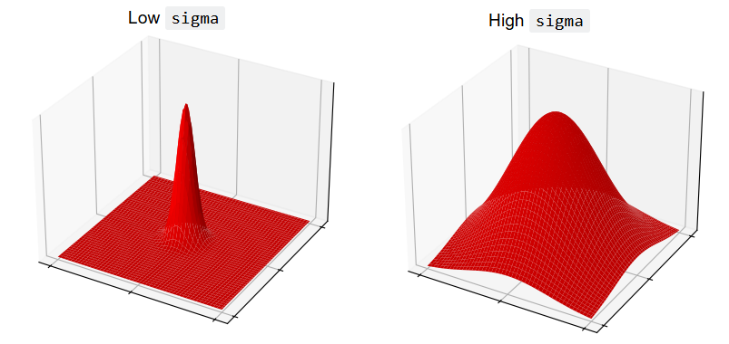
Let’s apply the filter with a sigma of 3:
# Gaussian filter `cat`, with `skimage`.
plt.imshow(ski.filters.gaussian(cat,
sigma=3));
Different sigma values will introduce a blurrier effect, because for higher sigma values, pixels further from the central value within each kernel are exerting more influence in the averaging calculation:
# Plot with different `sigma` values.
plt.figure(figsize=(14, 6))
for i, sigma in enumerate(np.arange(2, 14, 2)):
plt.subplot(2, 3, i+1)
plt.imshow(ski.filters.gaussian(cat,
sigma=sigma))
plt.xticks([])
plt.yticks([])
plt.title(f"sigma = {sigma}")
plt.suptitle('skimage.filters.gaussian()')
plt.tight_layout();
Exercise 22
Here is another kernel which follows a roughly Gaussian-like pattern - e.g. pixels closer to the center are weighted more heavily, pixels towards the sides have less weight. However, it is only somewhat Gaussian-like, and in fact is a very strange kernel, as we will see when we view it on a 3D plot:
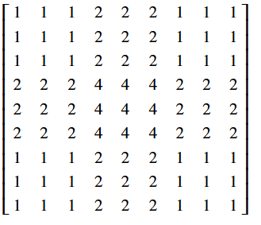
It is defined as a variable in the cell below:
# Create the strange kernel.
almost_gaussian_kernel = np.array([[1, 1, 1, 2, 2, 2, 1, 1, 1],
[1, 1, 1, 2, 2, 2, 1, 1, 1],
[1, 1, 1, 2, 2, 2, 1, 1, 1],
[2, 2, 2, 4, 4, 4, 2, 2, 2],
[2, 2, 2, 4, 4, 4, 2, 2, 2],
[2, 2, 2, 4, 4, 4, 2, 2, 2],
[1, 1, 1, 2, 2, 2, 1, 1, 1],
[1, 1, 1, 2, 2, 2, 1, 1, 1],
[1, 1, 1, 2, 2, 2, 1, 1, 1]])
almost_gaussian_kernel
array([[1, 1, 1, 2, 2, 2, 1, 1, 1],
[1, 1, 1, 2, 2, 2, 1, 1, 1],
[1, 1, 1, 2, 2, 2, 1, 1, 1],
[2, 2, 2, 4, 4, 4, 2, 2, 2],
[2, 2, 2, 4, 4, 4, 2, 2, 2],
[2, 2, 2, 4, 4, 4, 2, 2, 2],
[1, 1, 1, 2, 2, 2, 1, 1, 1],
[1, 1, 1, 2, 2, 2, 1, 1, 1],
[1, 1, 1, 2, 2, 2, 1, 1, 1]])
We plot this oddball kernel in 3D, in the cell below:
# Super weird!
kernel_plot(almost_gaussian_kernel)
It looks like a late 90s games console graphics take on a Gaussian! When we filter the camera image using this kernel, we get some strange results. First, we show the original camera image, as a starting point:
# Show the original `camera` image.
show_attributes(camera)
plt.imshow(camera);
Type: <class 'numpy.ndarray'>
dtype: uint8
Shape: (512, 512)
Max Pixel Value: 255
Min Pixel Value: 0

Now, we filter with weird kernel:
# Filter with the oddball kernel. (Probably) not the result we want...
almost_gaussian_filtered_camera = ndi.correlate(camera,
weights=almost_gaussian_kernel)
# Show the attributes and plot the result.
show_attributes(almost_gaussian_filtered_camera)
plt.matshow(almost_gaussian_filtered_camera);
Type: <class 'numpy.ndarray'>
dtype: uint8
Shape: (512, 512)
Max Pixel Value: 255
Min Pixel Value: 0
This may be a pretty cool effect, but, because the kernel we used looks like the weird cousin of a Gaussian, we would maybe expect this kernel to do something closer to Gaussian smoothing than to totally psych out the image, as it has done here.
With a small modification to the dtype, however, we can get the following Gaussian-like smoothing on camera, using the oddball almost_gaussian_kernel:
# Convert to `float64` dtype.
camera_as_float = ski.util.img_as_float64(camera)
# Filter with the oddball kernel, successfully.
almost_gaussian_filtered_camera = ndi.correlate(camera_as_float,
weights=almost_gaussian_kernel)
plt.matshow(almost_gaussian_filtered_camera);
Why did this happen? Take a moment to think about possible explanations. After your pause for thought, your task is to make adjustments to the kernel only to prevent the original psychedelic error from happening. You should be able to obtain the same smoothed image from the cell above, if you modify the kernel correctly. Just for reference, to save you scrolling, here is the target image again:
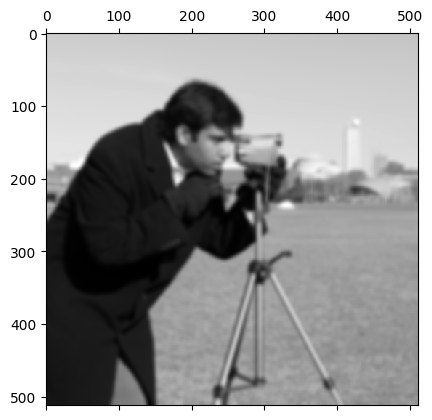
…and here is the psychedelic image that you should avoid:

When you modify the kernel DO NOT recreate the kernel array and “manually” modify the original numbers by editing them directly. Use numpy, scipy or skimage functions to alter the kernel to do what you need.
Hint: run the hint_krazy_kernel_1() function for a hint about how you could modify the kernel…
Hint 2: run the hint_krazy_kernel_2() function for some additional help regarding the source of the original error…
# YOUR CODE HERE
my_new_kernel = almost_gaussian_kernel.copy()
Solution to Exercise 22
So, the problem here is integer overflow. Filtering camera with the almost_gaussian_kernel results in numbers that are too big for the original uint8 dtype to handle. Let’s remind ourselves of the kernel values:
# Show the kernel.
almost_gaussian_kernel
array([[1, 1, 1, 2, 2, 2, 1, 1, 1],
[1, 1, 1, 2, 2, 2, 1, 1, 1],
[1, 1, 1, 2, 2, 2, 1, 1, 1],
[2, 2, 2, 4, 4, 4, 2, 2, 2],
[2, 2, 2, 4, 4, 4, 2, 2, 2],
[2, 2, 2, 4, 4, 4, 2, 2, 2],
[1, 1, 1, 2, 2, 2, 1, 1, 1],
[1, 1, 1, 2, 2, 2, 1, 1, 1],
[1, 1, 1, 2, 2, 2, 1, 1, 1]])
Now, when the maximum value of the kernel gets multiplied by the maximum value in camera, we get:
camera.max() * almost_gaussian_kernel.max()
np.int64(1020)
This multiplication will surely happen, when the kernel is centered on the maximum valued pixel (remember that, in filtering, the kernel gets centered on every pixel in the image).
This value is too large for the unit8 dtype of the original camera image, which can only range from 0 to 255.
camera.dtype
dtype('uint8')
This is what explains the strange result we saw above.
One solution to this is to scale the kernel to sum to 1. In fact, this is common practice with image filtering kernels because it ensures that they do not alter the average intensity values of the images to which they are applied. In this case, however, scaling the kernel so that it sums to 1 will also prevent integer overflow…
To ensure the kernel sums to 1, we just multiply the kernel by the reciprocal of the sum of the elements in the kernel, which in this case sum to 144:
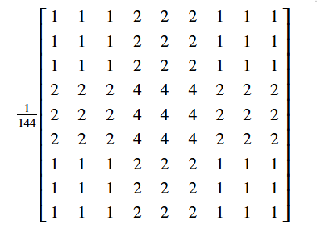
# Show the sum of the `almost_gaussian_kernel`.
almost_gaussian_kernel.sum()
np.int64(144)
# Fixed, scaled kernel.
almost_gaussian_solution_1 = 1/almost_gaussian_kernel.sum() * almost_gaussian_kernel
almost_gaussian_solution_1
array([[0.01, 0.01, 0.01, 0.01, 0.01, 0.01, 0.01, 0.01, 0.01],
[0.01, 0.01, 0.01, 0.01, 0.01, 0.01, 0.01, 0.01, 0.01],
[0.01, 0.01, 0.01, 0.01, 0.01, 0.01, 0.01, 0.01, 0.01],
[0.01, 0.01, 0.01, 0.03, 0.03, 0.03, 0.01, 0.01, 0.01],
[0.01, 0.01, 0.01, 0.03, 0.03, 0.03, 0.01, 0.01, 0.01],
[0.01, 0.01, 0.01, 0.03, 0.03, 0.03, 0.01, 0.01, 0.01],
[0.01, 0.01, 0.01, 0.01, 0.01, 0.01, 0.01, 0.01, 0.01],
[0.01, 0.01, 0.01, 0.01, 0.01, 0.01, 0.01, 0.01, 0.01],
[0.01, 0.01, 0.01, 0.01, 0.01, 0.01, 0.01, 0.01, 0.01]])
The kernel values now sum to 1:
almost_gaussian_solution_1.sum()
np.float64(1.0)
But the kernel still has its original, idiosyncratic shape:
# Plot the fixed, scaled kernel.
kernel_plot(almost_gaussian_solution_1);
Now, when we use this adjusted kernel to filter camera, we get the target image, which is the product of a filtering process much closer to Gaussian smoothing than the original attempt above:
# Bingo!
almost_gaussian_filtered_camera = ndi.correlate(camera,
weights=almost_gaussian_solution_1)
plt.matshow(almost_gaussian_filtered_camera);
Exercise 23
Below is another way of writing the formula for generating a 2D Guassian distribution, and therefore for generating a 2D Gaussian kernel.
\( \Large \text{Gaussian}(x, y) = \frac{1}{\sqrt{2 \pi \sigma^2}} e^{- \frac{x^2 + y^2}{2\sigma^2}} \)
In contrast the formula we saw above for the same distribution, this formula assumes that both \(x\) and \(y\) have an equal spread. Generally we will want this equality of spread, for a Gaussian kernel.
Your task is to define a function in the cell below (called DIY_gauss) which implements this revised Gaussian formula. Your function should take two 2D arrays (\(x\) and \(y\)), and a sigma (\(\sigma\)) value, as arguments. Figure out what needs to be in each input argument to produce the following target_kernel:
# Show the target kernel.
target_kernel = np.array([[0. , 0. , 0. , 0. , 0. , 0. , 0. ],
[0. , 0. , 0.01, 0.02, 0.01, 0. , 0. ],
[0. , 0.01, 0.06, 0.1 , 0.06, 0.01, 0. ],
[0. , 0.02, 0.1 , 0.16, 0.1 , 0.02, 0. ],
[0. , 0.01, 0.06, 0.1 , 0.06, 0.01, 0. ],
[0. , 0. , 0.01, 0.02, 0.01, 0. , 0. ],
[0. , 0. , 0. , 0. , 0. , 0. , 0. ]])
# Plot and show the target kernel.
kernel_plot(target_kernel);
target_kernel
array([[0. , 0. , 0. , 0. , 0. , 0. , 0. ],
[0. , 0. , 0.01, 0.02, 0.01, 0. , 0. ],
[0. , 0.01, 0.06, 0.1 , 0.06, 0.01, 0. ],
[0. , 0.02, 0.1 , 0.16, 0.1 , 0.02, 0. ],
[0. , 0.01, 0.06, 0.1 , 0.06, 0.01, 0. ],
[0. , 0. , 0.01, 0.02, 0.01, 0. , 0. ],
[0. , 0. , 0. , 0. , 0. , 0. , 0. ]])

Once you have successfully generated the target_kernel using your function, use it to blur the following image:
# Read in and show the image which you should blur with your new kernel.
xenomorph = ski.io.imread("images/xenomorph.png", as_gray=True)
plt.imshow(xenomorph);
You should find the sigma value that you need in order to produce the following target image:
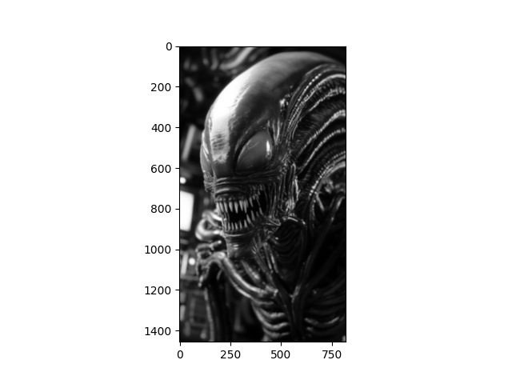
To help narrow things down, we have put some scaffolding code in the cell below, which shows how to generate the 2D x and y arrays with np.meshgrid(). The code is currently commented out, you will need to uncomment it, and modify it so it can be used to produce the target_kernel.
Hint: the values you need, for your x and y arrays, and your sigma value, are all positive or negative integers smaller than 5.
Hint 2: you should also think about the sum of all the values in the target_kernel.
Note: there is a cell two cells below which can “mark” your work - it will test whether your function produces a kernel identical to the target_kernel. Once you have written your function, uncomment the marking code and run it. If you have done everything correctly, it will run with no error. If not, you will get a nasty-looking error (but keep going!).
# YOUR CODE HERE
# The input vectors for your function.
#x_lin = np.arange(...)
#y_lin = x_lin.copy()
#x, y = np.meshgrid(x_lin,
#y_lin)
# Your function.
def DIY_gauss(x, y, sigma):
...
# MARK YOUR ANSWER HERE
# If the code below runs with no error, you have written the function correctly...
# You will need to un-comment the code first (obvivously!).
# UNCOMMENT THE LINE BELOW AND RUN THE CODE
# assert all(DIY_gauss_solution(x, y, sigma=secret_val()).round(2) == target_kernel.round(2).round(2))
Do not forget to use your kernel to blur the xenomorph image in the cell below:
# Convolve your kernel with the xenomorph image...
xenomorph_gauss_blurred = ...
Solution to Exercise 23
The function you need, with the correct input arguments, is below. You need to use np.arange(-3, 4) for the inputs to np.meshgrid() - the resulting 2D x_solution and y_solution arrays are printed out under the cell. A sigma of 1 will generate the target kernel.
An important step here is gauss = 1/gauss.sum() * gauss which ensures that the kernel elements sum to 1. As we noted in the solution to the last exercise, this step makes sure that the average pixel intensity of an image stays the same as the original image, when we filter the image with this kernel (this is called normalising the kernel).
If we skip the normalisation step, we may well create problems with illegal (too large!) pixel intensity values, or otherwise will be changing the intensities in a way that is not part of the typical Gaussian blur procedure e.g. we will be altering the average pixel intensity of the whole image, rather than just blurring the pixels…
def DIY_gauss_solution(i, j, sigma):
# Implement the function.
gauss = 1/np.sqrt(2 * np.pi * sigma**2) * np.exp(- (i**2 + j**2) /(2 * sigma**2))
# Scale the kernel so it sums to 1.
gauss = 1/gauss.sum() * gauss
return gauss
# Generate the input arrays.
x_lin_solution = np.arange(-3, 4)
y_lin_solution = x_lin_solution.copy()
x_solution, y_solution = np.meshgrid(x_lin_solution,
y_lin_solution)
# Print out some reports/results.
print(f"x =\n {x_solution} \n \ny =\n {y_solution}")
print(f"\nGaussian kernel (same as `target_kernel`) =\n {DIY_gauss_solution(x_solution, y_solution, 1).round(2)}\n")
# Is it all the same as the `target_kernel`?
print("Same as the target? This array should contain on `True`s if so...:")
DIY_gauss_solution(x_solution, y_solution, 1).round(2) == target_kernel.round(2)
x =
[[-3 -2 -1 0 1 2 3]
[-3 -2 -1 0 1 2 3]
[-3 -2 -1 0 1 2 3]
[-3 -2 -1 0 1 2 3]
[-3 -2 -1 0 1 2 3]
[-3 -2 -1 0 1 2 3]
[-3 -2 -1 0 1 2 3]]
y =
[[-3 -3 -3 -3 -3 -3 -3]
[-2 -2 -2 -2 -2 -2 -2]
[-1 -1 -1 -1 -1 -1 -1]
[ 0 0 0 0 0 0 0]
[ 1 1 1 1 1 1 1]
[ 2 2 2 2 2 2 2]
[ 3 3 3 3 3 3 3]]
Gaussian kernel (same as `target_kernel`) =
[[0. 0. 0. 0. 0. 0. 0. ]
[0. 0. 0.01 0.02 0.01 0. 0. ]
[0. 0.01 0.06 0.1 0.06 0.01 0. ]
[0. 0.02 0.1 0.16 0.1 0.02 0. ]
[0. 0.01 0.06 0.1 0.06 0.01 0. ]
[0. 0. 0.01 0.02 0.01 0. 0. ]
[0. 0. 0. 0. 0. 0. 0. ]]
Same as the target? This array should contain on `True`s if so...:
array([[ True, True, True, True, True, True, True],
[ True, True, True, True, True, True, True],
[ True, True, True, True, True, True, True],
[ True, True, True, True, True, True, True],
[ True, True, True, True, True, True, True],
[ True, True, True, True, True, True, True],
[ True, True, True, True, True, True, True]])
To use the target_kernel to recreate the target image, you need to hefty sigma value of 10:
sigma = 10
# Blur the `xenomorph` image, and show beside the original.
target_image_solution = ndi.correlate(xenomorph,
weights=DIY_gauss_solution(x_solution, y_solution, sigma=sigma))
# Show the original image and the blurred image.
plt.figure(figsize=(14, 5))
plt.subplot(1, 2, 1)
plt.title('Original')
plt.imshow(xenomorph)
plt.subplot(1, 2, 2)
plt.imshow(target_image_solution)
plt.title('Gaussian Blur with `target_kernel`');
Image sharpening#
Gaussian filtering is a nice visual effect by itself, but filters like the Gaussian filter which blur an image can also, somewhat paradoxically, be used to sharpen an image. Sharpening is the opposite of blurring, it makes images clearer, with the features and edges more defined.
How can we sharpen an image with a Gaussian blur filter, we hear you ask? We will demonstrate below. Sharpening is easiest to appreciate if we start with a slightly blurry image. In the cell below, we create a blurry_cat image by applying a Gaussian filter, we use a low sigma value, to keep the blur only slight:
# Add a little blur.
blurry_cat = ski.filters.gaussian(ski.data.cat(),
sigma=1)
plt.imshow(blurry_cat);
A simple way to sharpen the image is via the following procedure:
Theoretically speaking, \(\text{(original_image – blurred_image)}\) contains sharpened details of the image, because it results from subtracting out a version of the image which is much blurrier than the original, giving us the difference between the original image and the blurry image. This effect is easiest to appreciate visually:
# Perform the sharpening, on each colour channel separately, to avoid altering the colour of the image.
gaussian_filtered_cats = []
sharpened = []
for i in np.arange(blurry_cat.shape[2]):
gaussian_filtered_cats.append(ski.filters.gaussian(blurry_cat[:, :, i], 4))
sharpened.append(blurry_cat[:, :, i] + (blurry_cat[:, :, i] - gaussian_filtered_cats[i]))
# Stack back to 3D.
sharpened = np.stack(sharpened, axis=2)
gaussian_filter_cat = np.stack(gaussian_filtered_cats,
axis=2)
# Rescale to legal pixel ranges.
sharpened = ski.exposure.rescale_intensity(sharpened, out_range=(0, 1))
# Show the result.
plt.figure(figsize=(16, 6))
plt.subplot(1,3,1)
plt.title('Original')
plt.imshow(blurry_cat)
plt.subplot(1,3,2)
plt.title('Blurred')
plt.imshow(gaussian_filter_cat)
plt.subplot(1,3,3)
plt.title('Sharpened')
plt.imshow(sharpened)
plt.tight_layout();
You can see that the sharpened image, as intended, has better clarity than the original. We can also use a specialised sharpening kernel to achieve the same effect:
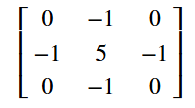
We show this kernel in 3D below (it does look pretty sharp!):
sharpening_kernel = np.array([[0, -1 , 0],
[-1, 5, -1],
[0, -1, 0]])
print(sharpening_kernel)
kernel_plot(sharpening_kernel)
[[ 0 -1 0]
[-1 5 -1]
[ 0 -1 0]]
This kernel works by emphasising differences between adjacent pixels. Essentially, the more different than a pixel is from its surrounding pixels, the bigger value it will get in the sharpened image.
To see this in detail, let’s take just the middle row of the sharpening_kernel:
# Slice out the middle row of the `sharpening_kernel`.
middle_row_sharp = sharpening_kernel[1, :]
middle_row_sharp
array([-1, 5, -1])
We can convolve this middle row with a 1-D array of numbers, using the same machinery as for larger image arrays:
# An array of numbers.
my_nums = np.array([0, 1, 2, 100])
my_nums
array([ 0, 1, 2, 100])
We perform the convolution in the cell below:
ndi.correlate(my_nums,
weights=middle_row_sharp)
array([ -1, 3, -91, 398])
You can see that bigger differences between adjacent values result in larger absolute numbers in the output array, emphasising the differences. We show this principle again below, using 2D arrays the full sharpening_kernel. First, we create a 2D array where there are no differences between the adjacent pixels:
# A boring array.
no_diff = np.ones((6, 6))
no_diff
array([[1., 1., 1., 1., 1., 1.],
[1., 1., 1., 1., 1., 1.],
[1., 1., 1., 1., 1., 1.],
[1., 1., 1., 1., 1., 1.],
[1., 1., 1., 1., 1., 1.],
[1., 1., 1., 1., 1., 1.]])
Convolving this array with the sharpening_kernel will yield the same array, as there are no differences in the input.
ndi.correlate(no_diff,
weights=sharpening_kernel)
array([[1., 1., 1., 1., 1., 1.],
[1., 1., 1., 1., 1., 1.],
[1., 1., 1., 1., 1., 1.],
[1., 1., 1., 1., 1., 1.],
[1., 1., 1., 1., 1., 1.],
[1., 1., 1., 1., 1., 1.]])
Conversely, the array below contains a repeating pattern of 2’s and 3’s in the first three rows, so the differences between pixel neighbourhoods in the early rows are fairly consistent.
In the last three rows, the same pattern is repeated, only now the 3’s are negative, increasing the difference between the pixels in each neighbourhood:
diffs = np.array([[2, 3, 2, 3, 2, 3],
[3, 2, 3, 2, 3, 2],
[2, 3, 2, 3, 2, 3],
[2, -3, 2, -3, 2, -3],
[-3, 2, -3, 2, -3, 2],
[2, -3, 2, -3, 2, -3]])
diffs
array([[ 2, 3, 2, 3, 2, 3],
[ 3, 2, 3, 2, 3, 2],
[ 2, 3, 2, 3, 2, 3],
[ 2, -3, 2, -3, 2, -3],
[-3, 2, -3, 2, -3, 2],
[ 2, -3, 2, -3, 2, -3]])
Convolving with the sharpening_kernel results in a larger number of larger absolute values in the bottom three rows, amplifying the differences between the pixels, such that larger differences become even larger thanks to the sharpening operation:
# Larger differences in later rows, where there is greater variance in the pixel intensities.
sharp_diffs = ndi.correlate(diffs,
weights=sharpening_kernel)
print(sharp_diffs)
[[ 0 6 -1 6 -1 5]
[ 6 -2 7 -2 7 -1]
[ 0 12 -1 12 -1 11]
[ 12 -24 17 -24 17 -19]
[-18 22 -23 22 -23 17]
[ 12 -18 17 -18 17 -13]]
Let’s apply the sharpening_kernel to the blurry_cat image array. As this array is a 3D colour image, we apply the kernel to each colour channel separately:
# Separately sharpen each colour channel of the `blurry_cat` image.
sharpened_channels = {}
for i in np.arange(3):
sharpened_cat_channel = ndi.correlate(blurry_cat[:, :, i],
weights=sharpening_kernel)
sharpened_channels[i] = sharpened_cat_channel
# Stack back to 3D.
sharpened_cat = np.stack([sharpened_channels[0],
sharpened_channels[1],
sharpened_channels[2]],
axis=2)
# Rescale to avoid illegal an pixel range.
sharpened_cat = ski.exposure.rescale_intensity(sharpened_cat, out_range=(0, 1))
# Show the result.
plt.figure(figsize=(16, 6))
plt.subplot(1,2,1)
plt.title('Original')
plt.imshow(blurry_cat)
plt.subplot(1,2,2)
plt.title('Sharpened')
plt.imshow(sharpened_cat)
plt.tight_layout();
Sci-kit image (unsurprisingly) also has filters to sharpen images. The ski.filters.unsharp_mask() filter is one such filter, and it uses a similar approach to the one we used above, when we sharpened an image using a Gaussian filter. ski.filters.unsharp_mask() uses the following approach:
\( \text{sharpened_img = original_img + scaling_amount * (original_img - blurred_img)} \)
…where “scaling_amount” is a single value which amplifies the sharpened details. Here is the result on blurry_cat, using the default parameters, aside from channel_axis. We set this to 2 to tell the function that this is a colour image, with the colour channels in the third dimension (axis = 2). This prevents the sharpening filter from affecting the colour of the image:
# Sharpen `blurry_cat`.
sharpen_cat = ski.filters.unsharp_mask(blurry_cat,
channel_axis=2)
# Show the result.
plt.figure(figsize=(16, 6))
plt.subplot(1,2,1)
plt.title('Original')
plt.imshow(blurry_cat)
plt.subplot(1,2,2)
plt.title('Sharpened \n(with `ski.filters.unsharp_mask()`)')
plt.imshow(sharpen_cat)
plt.tight_layout();
Changing the amount parameter will intensify the sharpening effect:
# Sharpen `blurry_cat`.
sharpen_cat = ski.filters.unsharp_mask(blurry_cat,
amount=2,
channel_axis=2)
# Show the result.
plt.figure(figsize=(16, 6))
plt.subplot(1,2,1)
plt.title('Original')
plt.imshow(blurry_cat)
plt.subplot(1,2,2)
plt.title('Sharpened \n(with `ski.filters.unsharp_mask(amount=3)`)')
plt.imshow(sharpen_cat)
plt.tight_layout();
Exercise 24
In keeping with the “sharp” topic, below we load in a picture of a very regal-looking eagle, from ski.data:
# Load in and show an image.
eagle = ski.data.eagle()
show_attributes(eagle)
plt.imshow(eagle);
Type: <class 'numpy.ndarray'>
dtype: uint8
Shape: (2019, 1826)
Max Pixel Value: 255
Min Pixel Value: 1
We’re feeling vandalistic, and so have ruined this image by adding a boatload of Gaussian blur, in the cell below:
# Blur the `eagle` image.
blurry_eagle = ski.filters.gaussian(eagle,
sigma=5)
plt.imshow(blurry_eagle);
You mission is the following. Make a custom sharpening kernel to sharpen blurry_eagle. You need to modify the kernel, because if we use the original sharpening_kernel on blurry_eagle, it does not perform well. The image below shows the result of sharpening with the original sharpening_kernel:
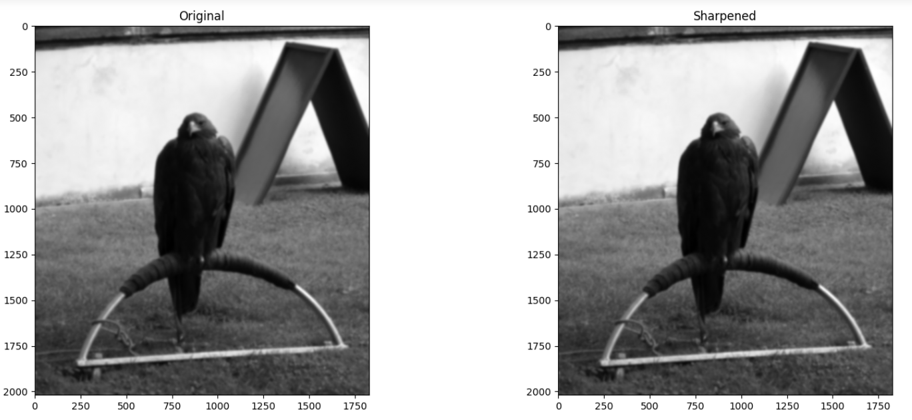
When making your modifications to the kernel pay attention to the original values in sharpening_kernel to decide what values you can use to achieve a similar but stronger effect. Here is the original sharpening_kernel, to act as your spiritual guide:
…think carefully about what you can change to improve the sharpening performance.
As a final step use ski.filters.unsharp_mask() as an alternate method sharpen the blurry_eagle image. Use whatever argument settings you need. Compare the result to your custom kernel.
# YOUR CODE HERE
my_sharpening_kernel = ...
sharp_eagle = ...
Solution to Exercise 24
We got some pretty good performance from the following kernel:
another_sharpening_kernel = np.array([[ -3, -3, -3],
[ -3, 25, -3],
[ -3, -3, -3]])
An important feature to be aware of here, is that the sharpening kernel should sum to 1:
# The sum of the original `sharpening_kernel`.
sharpening_kernel.sum()
np.int64(1)
# The sum of the newer, stronger `another_sharpening_kernel`.
another_sharpening_kernel.sum()
np.int64(1)
As with Gaussian kernels, this is to ensure that the sharpening filter does not alter the average brightness of the original image.
The reason our new another_sharpening_kernel performs better than the original sharpening_kernel is because the central value is higher. To ensure the kernel sums to 1, we therefore must increase the absolute value of the negative kernel elements. These two factors (bigger central value, bigger negative off-center values) increase the strength of the sharpening effect.
We use the new kernel to sharpen blurry_eagle in the cell below:
# Perform the convolution, to sharpen the image.
sharpened_eagle_solution = ndi.correlate(blurry_eagle,
weights=another_sharpening_kernel)
# Rescale to avoid illegal an pixel range.
sharpened_eagle_solution = ski.exposure.rescale_intensity(sharpened_eagle_solution, out_range=(0, 1))
# Show the result.
plt.figure(figsize=(12, 6))
plt.subplot(1,2,1)
plt.title('Blurry')
plt.imshow(blurry_eagle)
plt.subplot(1,2,2)
plt.title('Sharpened')
plt.imshow(sharpened_eagle_solution)
plt.tight_layout();
We also got pretty good results from ski.filters.unsharp_mask(), setting the amount argument to 3 (for a strong sharpening effect):
# Sharpen, via `skimage`.
sharpened_eagle_solution_from_ski = ski.filters.unsharp_mask(blurry_eagle,
amount=5)
# Show the result.
plt.figure(figsize=(12, 6))
plt.subplot(1,2,1)
plt.title('Blurry')
plt.imshow(blurry_eagle)
plt.subplot(1,2,2)
plt.title('Sharpened (with `skimage`)')
plt.imshow(sharpened_eagle_solution_from_ski )
plt.tight_layout();
Edge detection filtering#
We saw a simple edge detection filter in one of the exercises on an earlier page. In image processing and computer vision, an edge is a rapid change in intensity between pixels - e.g. there is a high gradient of change between the pixel values. We can construct a kernel which will detect such intensity changes in the vertical (\(y\)) direction, and thus will detect horizontal edges. That may sound paradoxical, but horizontal edges have vertical gradients:
# A horizontal edge detection kernel.
horizontal_edge_detection_kernel = np.array([[-1, -1, -1],
[ 0, 0, 0],
[ 1, 1, 1]])
horizontal_edge_detection_kernel
array([[-1, -1, -1],
[ 0, 0, 0],
[ 1, 1, 1]])
To show how this kernel works, we will make an image array with very clear edges - one horizontal edge is at the top of the white square, another is at the bottom of the white square. One vertical edge is on the left side of the square, and another vertical edge is on the right side of the square:
# An image array containing clear edges.
edgy = np.array([ [0, 0, 0, 0, 0, 0, 0, 0, 0, 0],
[0, 0, 0, 0, 0, 0, 0, 0, 0, 0],
[0, 0, 1, 1, 1, 1, 1, 1, 0, 0],
[0, 0, 1, 1, 1, 1, 1, 1, 0, 0],
[0, 0, 1, 1, 1, 1, 1, 1, 0, 0],
[0, 0, 1, 1, 1, 1, 1, 1, 0, 0],
[0, 0, 1, 1, 1, 1, 1, 1, 0, 0],
[0, 0, 1, 1, 1, 1, 1, 1, 0, 0],
[0, 0, 1, 1, 1, 1, 1, 1, 0, 0],
[0, 0, 0, 0, 0, 0, 0, 0, 0, 0],
[0, 0, 0, 0, 0, 0, 0, 0, 0, 0]])
plt.imshow(edgy);
Convolving with our horizontal edge detection kernel finds the horizontal edges. Note again that the change in pixel intensities is in the vertical direction, but the edge itself runs in the horizontal direction:
# Use the horizontal edge detection filter.
edgy_horizontal = ndi.correlate(edgy,
horizontal_edge_detection_kernel)
plt.imshow(edgy_horizontal);
Let’s think about what has happened here at the level of the individual pixels. Three kernel locations from the top of the array are represented below (once again, you can right click on these images and open them in a new tab/window, for easier viewing):
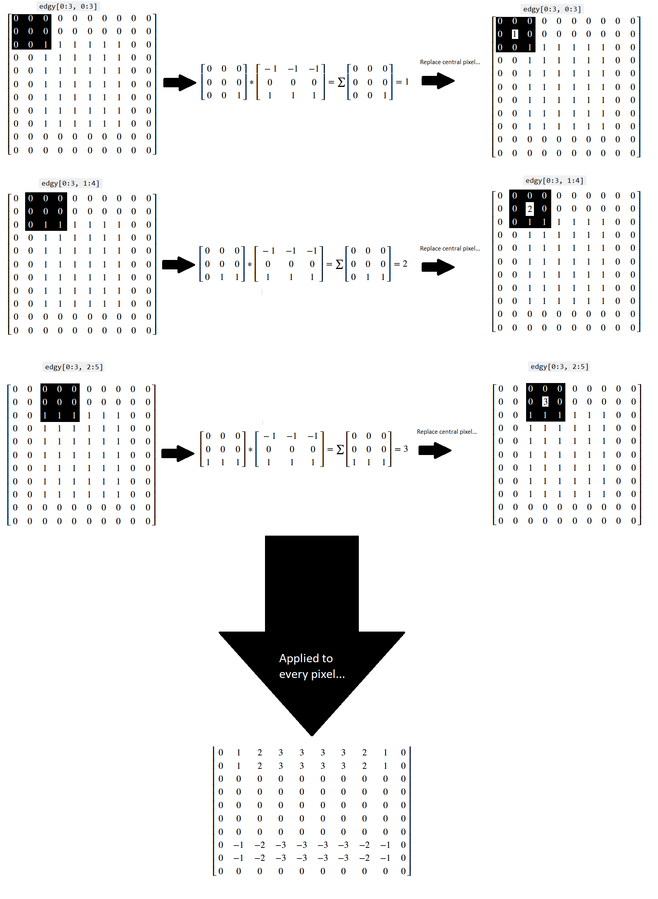
You can see that, for a binary image, the horizontal kernel convolution essential “counts” the number of 0-to-1 vertical changes in the kernel location, which lets it detect horizontal edges.
Conversely, when the kernel hits the 1-to-0 vertical changes at the bottom of the array, we get a similar count of the 1-to-0 changes, but indicated by a negative value, telling us that the gradient is in the other direction:
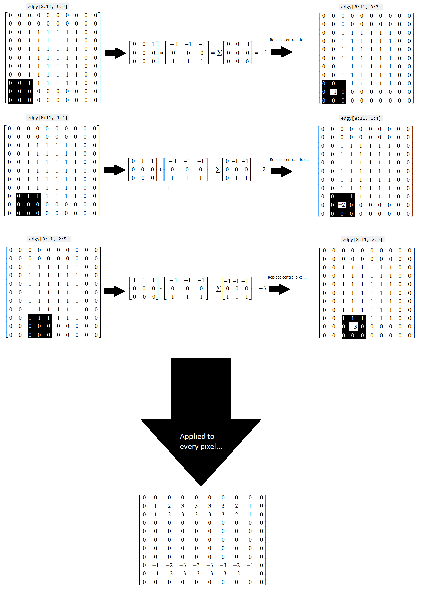
The original edgy array, and the array resulting from convolution with the horizontal_edge_detection_kernel are both shown in “raw” NumPy output below:
# Show the horizontal edge-filtered array.
print("Original `edgy` array:\n", edgy)
print("\nHorizontally edge filtered:\n", edgy_horizontal)
Original `edgy` array:
[[0 0 0 0 0 0 0 0 0 0]
[0 0 0 0 0 0 0 0 0 0]
[0 0 1 1 1 1 1 1 0 0]
[0 0 1 1 1 1 1 1 0 0]
[0 0 1 1 1 1 1 1 0 0]
[0 0 1 1 1 1 1 1 0 0]
[0 0 1 1 1 1 1 1 0 0]
[0 0 1 1 1 1 1 1 0 0]
[0 0 1 1 1 1 1 1 0 0]
[0 0 0 0 0 0 0 0 0 0]
[0 0 0 0 0 0 0 0 0 0]]
Horizontally edge filtered:
[[ 0 0 0 0 0 0 0 0 0 0]
[ 0 1 2 3 3 3 3 2 1 0]
[ 0 1 2 3 3 3 3 2 1 0]
[ 0 0 0 0 0 0 0 0 0 0]
[ 0 0 0 0 0 0 0 0 0 0]
[ 0 0 0 0 0 0 0 0 0 0]
[ 0 0 0 0 0 0 0 0 0 0]
[ 0 0 0 0 0 0 0 0 0 0]
[ 0 -1 -2 -3 -3 -3 -3 -2 -1 0]
[ 0 -1 -2 -3 -3 -3 -3 -2 -1 0]
[ 0 0 0 0 0 0 0 0 0 0]]
You can also view these arrays, in prettier form, below:
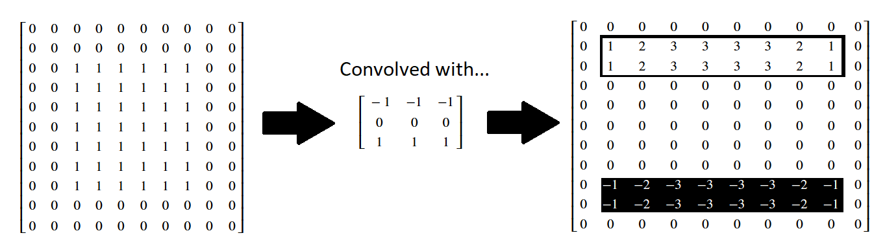
We can “flip” our edge detection kernel to look for big changes in gradient in the horizontal (\(x\)) direction, which will find vertical edges:
# A vertical edge detection kernel.
vertical_edge_detection_kernel = horizontal_edge_detection_kernel.T
vertical_edge_detection_kernel
array([[-1, 0, 1],
[-1, 0, 1],
[-1, 0, 1]])
It should be easy to appreciate why this edge detection kernel operates to detect gradients and edges in a different direction!
Now, when applied to our edgy image array, the vertical edge detection kernel, true to its name, detects vertical edges, and it does show by looking for large pixel intensity changes in the horizontal direction (e.g. those at the left/right side edges of the square):
# The original square.
plt.imshow(edgy);
# Detect edges in the vertical direction.
edgy_vertical = ndi.correlate(edgy,
vertical_edge_detection_kernel)
plt.imshow(edgy_vertical);
Again, in the resultant image, changes from black to white (0-to-1) end up as white pixels (with value 1). Conversely, changes from white to black (1-to-0) end up as black pixels (with value -1). No change ends up as grey (0):
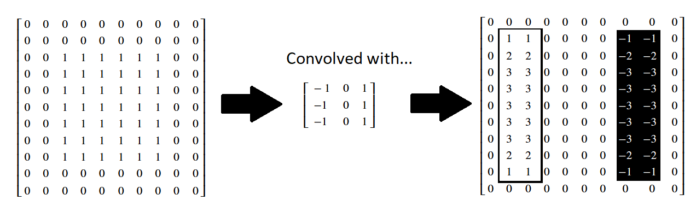
Applied to more complex images, this edge detection can have some pretty cool effects:
# Load in an image, convert to greyscale.
coffee_grey = ski.color.rgb2gray(ski.data.coffee())
# Plot the original image.
plt.imshow(coffee_grey)
show_attributes(coffee_grey);
Type: <class 'numpy.ndarray'>
dtype: float64
Shape: (400, 600)
Max Pixel Value: 1.0
Min Pixel Value: 0.0
First, we detect edges in the horizontal direction:
# Filter using the horizontal edge detection kernel.
gradient_horizontal_coffee_grey = ndi.correlate(coffee_grey,
horizontal_edge_detection_kernel)
plt.imshow(gradient_horizontal_coffee_grey);
Then, in the vertical direction:
# Filter using the vertical edge detection kernel.
gradient_vertical_coffee_grey = ndi.correlate(coffee_grey,
vertical_edge_detection_kernel)
plt.imshow(gradient_vertical_coffee_grey);
We can combine these two edge detection filters together to search for edges in both directions. First, lets refreseh our memory of what edgy looked like, filtered in both directions separately:
# Show the image which has been filtered with the horizontal edge detection kernel.
plt.subplot(1, 2, 1)
plt.imshow(edgy_horizontal)
plt.title('Horizontal Edges')
# Show the image which has been filtered with the vertical edge detection kernel.
plt.subplot(1, 2, 2)
plt.imshow(edgy_vertical)
plt.title('Vertical Edges');
A simple way to combine these filters is to:
np.stack()them into 3D……then convert pixel values to absolute numbers (e.g. remove the signs)…
…and then take to the maximum value across the third dimension (e.g. using
.max(axis = 2)). This will resize the array down to 2D and…
…at the end of this process, only pixels for which an edge was detected in either direction will remain in the resulting image array:
# Combine the filters.
edgy_vertical_horizontal_stack = np.stack([edgy_vertical, edgy_horizontal], axis=2) # Stack to 3D, `shape` = (11, 10, 2).
edgy_vertical_horizontal_stack = np.abs(edgy_vertical_horizontal_stack) # Remove the signs, from all elements in the 3D array.
edgy_vertical_horizontal_stack = edgy_vertical_horizontal_stack.max(axis=2) # Reshape to 2D, leaving only the largest value from
# either slice in the resulting array.
# Show the result.
plt.imshow(edgy_vertical_horizontal_stack);
Pretty cool, here are all the steps, visualised together:
# Plot all the `edgy` images together.
plt.figure(figsize=(16, 6))
plt.subplot(1, 4, 1)
plt.title("Original")
plt.imshow(edgy)
plt.subplot(1, 4, 2)
plt.title("Horizontal Edges")
plt.imshow(edgy_horizontal)
plt.subplot(1, 4, 3)
plt.title("Vertical Edges")
plt.imshow(edgy_vertical)
plt.subplot(1, 4, 4)
plt.title("Both Combined")
plt.imshow(edgy_vertical_horizontal_stack);
The pixel values throughout this edge detection process, on the edgy array, are shown on the image below:
Let’s do this again, for the images that resulted from filtering coffee_grey with our horizontal and vertical edge detection kernels, respectively.
# Search for both types of edge (with `coffee_grey`).
coffee_vertical_horizontal_stack = np.stack([gradient_vertical_coffee_grey,
gradient_horizontal_coffee_grey], axis=2) # Stack to 3D, `shape` = (400, 600, 2).
coffee_vertical_horizontal_stack = np.abs(coffee_vertical_horizontal_stack) # Remove the signs, from all elements in the 3D array.
coffee_vertical_horizontal_stack = coffee_vertical_horizontal_stack.max(axis=2)# Reshape to 2D, leaving only the largest value from
# from either slice in the resulting 2D array.
# Show the result.
plt.imshow(coffee_vertical_horizontal_stack);
Edgy indeed…
We can view all of these steps together, on the plot below:
# Plot all the `coffee_grey` images together.
plt.figure(figsize=(12,8))
plt.subplot(2, 2, 1)
plt.title("Original")
plt.imshow(coffee_grey)
plt.subplot(2, 2, 2)
plt.title("Horizontal Edges")
plt.imshow(gradient_horizontal_coffee_grey)
plt.subplot(2, 2, 3)
plt.title("Vertical Edges")
plt.imshow(gradient_vertical_coffee_grey)
plt.subplot(2, 2, 4)
plt.title("Both Combined")
plt.imshow(coffee_vertical_horizontal_stack);
Sobel edge detection filtering#
A similiar edge detection filter is the Sobel filter, which uses the following kernels:
# Sobel horizontal edge detection kernel.
sobel_horizontal =np.array([[-1,-2,-1],
[0, 0, 0],
[1, 2, 1]])
print("\nSobel horizontal edge detection kernel:\n", sobel_horizontal)
Sobel horizontal edge detection kernel:
[[-1 -2 -1]
[ 0 0 0]
[ 1 2 1]]
# Sobel vertical edge detection kernel.
sobel_vertical = np.array([[-1, 0, 1],
[-2, 0, 2],
[-1, 0, 1]])
print("\nSobel vertical edge detection kernel:\n", sobel_vertical)
Sobel vertical edge detection kernel:
[[-1 0 1]
[-2 0 2]
[-1 0 1]]
Let’s try these out with edgy:
# Apply the Sobel horizontal edge detection filter.
sobel_edgy_horizontal = ndi.correlate(edgy,
sobel_horizontal)
plt.imshow(sobel_edgy_horizontal);
The effect on the individual pixel values is shown below:
# Apply the Sobel vertical edge detection filter.
sobel_edgy_vertical = ndi.correlate(edgy,
sobel_vertical)
plt.imshow(sobel_edgy_vertical);
Again, you can inspect the effect on the individual pixel values below:

We can combine each edge-filtered image using the method we saw above, taking the absolute maximum values after stacking:
# Combine the filters.
sobel_edgy_vertical_horizontal_stack = np.stack([sobel_edgy_vertical, sobel_edgy_horizontal], axis=2) # Stack to 3D, `shape` = (11, 10, 2).
sobel_edgy_vertical_horizontal_stack = np.abs(sobel_edgy_vertical_horizontal_stack) # Remove the signs, from all elements in the 3D array.
sobel_edgy_vertical_horizontal_stack = sobel_edgy_vertical_horizontal_stack.max(axis=2) # Reshape to 2D, leaving only the largest value from
# either slice in the resulting array.
# Show the result.
plt.imshow(sobel_edgy_vertical_horizontal_stack);
The more formal method is to use the following formula, where the filtered image containing the vertical edges (e.g. the horizontal gradients) is \(G_x\), and the the filtered image containing the horizontal edges (e.g. the vertical gradients) is \(G_y\):
\( \large G_{\text{overall}} = \sqrt{ G_x^2 + G_y^2 } \)
You may recognise this as the Euclidean distance formula. It will give us the edges in both directions, pretty nifty!:
# Run the numbers...
sobel_overall = np.sqrt(sobel_edgy_vertical**2 + sobel_edgy_horizontal**2)
plt.imshow(sobel_overall);
Below we show the pixel values in this Sobel-filtered image, with edges in both directions - the numbers in the final array have been rounded to keep it uncluttered:
Edge detection filters in skimage#
skimage contains a variety of edge detection filters, and makes it a breeze to implement them. You know the drill now, just pass skimage your NumPy image array and pray the dtypes are all in order (we kid, but also not…).
Remember the first edge detection kernels that we used above?:
Similar kernels are are used by ski.filters.prewitt() edge detection filter, which we implement in the cell below, on the edgy array:
# Prewhitt filtering.
edgy_prewitt_ski = ski.filters.prewitt(edgy)
plt.imshow(edgy_prewitt_ski);
Here we implement the Sobel filter using skimage:
# The same Sobel result, via `skimage`.`
edgy_sobel_ski = ski.filters.sobel(edgy)
plt.imshow(edgy_sobel_ski);
The plot below shows the effect of both filters, side by side:
# Altogether...
coins = ski.data.coins()
prewitt_coins = ski.filters.prewitt(coins)
sobel_coins = ski.filters.sobel(coins)
prewitt_coffee = ski.filters.prewitt(coffee_grey)
sobel_coffee = ski.filters.sobel(coffee_grey)
fig, ax = plt.subplots(3, 3,
figsize=(12, 12),
constrained_layout=True)
ax[0, 0].imshow(edgy)
ax[0, 0].set_title('Original')
ax[0, 0].axis('off')
ax[0, 1].imshow(edgy_prewitt_ski)
ax[0, 1].set_title('Prewitt Edge Filter')
ax[0, 1].axis('off')
ax[0, 2].imshow(edgy_sobel_ski)
ax[0, 2].set_title('Sobel Edge Filter')
ax[0, 2].axis('off')
ax[1, 0].imshow(coins)
ax[1, 0].set_title('Original')
ax[1, 0].axis('off')
ax[1, 1].imshow(prewitt_coins)
ax[1, 1].set_title('Prewitt Edge Filter')
ax[1, 1].axis('off')
ax[1, 2].imshow(sobel_coins)
ax[1, 2].set_title('Sobel Edge Filter')
ax[1, 2].axis('off')
ax[2, 0].imshow(coffee_grey)
ax[2, 0].set_title('Original')
ax[2, 0].axis('off')
ax[2, 1].imshow(prewitt_coffee)
ax[2, 1].set_title('Prewitt Edge Filter')
ax[2, 1].axis('off')
ax[2, 2].imshow(sobel_coffee)
ax[2, 2].set_title('Sobel Edge Filter')
ax[2, 2].axis('off')
plt.show();
Exercise 25
Think about all of the edge detection filter types we have seen above. You may have noticed that, for all of the final output images from each filter, the edges detected are two pixels wide. For instance the image below results from filtering edgy with the Sobel filter:
# Edgy, filtered with `ski.filters.sobel()`.
plt.imshow(edgy_sobel_ski);
You can see that both the horizontal edges and the vertical edges are two pixels wide.
Can you think of the modifications you could make to the edge detection kernels, such that after convolving edgy with the kernels, and combining the results into one image, that the edges in the combined image are only one pixel wide?
Think about what you need to do, and try to recreate this target image:
Here are the original edge detection kernels we used, for comparison, to help you think about what modifications you need to recreate the target image:
Please note that you will “pass” this exercise if you make kernels which detect one-pixel wide edges, even if your final image does not exactly match the one above. You could modify the Sobel kernels as well, or investigate other edge detection kernel types…
Hint: run the function hint_edgy() for some help if you get stuck.
# YOUR CODE HERE
Solution to Exercise 25
The solution here is to use smaller kernels, so they are searching for pixel intensity gradients in smaller pixel neighbourhoods. We used the following kernels:
# Detect horizontal edges.
horizontal_2by2_kernel = np.array([[1, 1],
[-1, -1]])
horizontal_2by2_kernel
array([[ 1, 1],
[-1, -1]])
…convolving edgy with this kernel yields single-pixel wide horizontal edges:
# Convolve `edgy` with our kernel to find the horizontal edges.
edgy_horizontal_from_2by2 = ndi.correlate(edgy,
weights=horizontal_2by2_kernel)
plt.imshow(edgy_horizontal_from_2by2);
Then we used this kernel to find the vertical edges:
vertical_2by2_kernel = np.array([[-1, 1],
[-1, 1]])
vertical_2by2_kernel
array([[-1, 1],
[-1, 1]])
…convolving with edgy gives us:
# Convolve `edgy` with our kernel to find the vertical edges.
edgy_vertical_from_2by2 = ndi.correlate(edgy,
weights=vertical_2by2_kernel)
plt.imshow(edgy_vertical_from_2by2);
We then applied the Euclidean distance formula to get the horizontal and vertical edges in one image:
\( \large G_{\text{overall}} = \sqrt{ G_x^2 + G_y^2 } \)
As if by magic, we get our one-pixel wide edges, in the final image:
# Both types of edge together, with thanks to Euclid.
edgy_both_from_2by2_kernel = np.sqrt(edgy_vertical_from_2by2**2 + edgy_horizontal_from_2by2**2)
plt.imshow(edgy_both_from_2by2_kernel );

Summary#
This page has showed how to use various convolution kernels to filter images, using numpy, scipy and skimage. We have seen how changing the convolutional kernel can alter the filtering process to achieve different aims, like blurring/smoothing and edge detection.
References#
3.3.5 onward from: https://lectures.scientific-python.org/packages/scikit-image/index.html
Based on: https://scikit-image.org/skimage-tutorials/lectures/1_image_filters.html
Reference: https://www.kdnuggets.com/numpy-for-image-processing
Reference: https://setosa.io/ev/image-kernels
Reference: https://wiki.imindlabs.com.au/ds/aml/4_problem_domains/1-image-processing/3_edge_detectors
Reference: https://www.geeksforgeeks.org/deep-learning/types-of-convolution-kernels
Reference: https://scikit-image.org/skimage-tutorials/lectures/1_image_filters.html
Reference: https://jni.github.io/i2k-skimage-napari/lectures/1_image_filters.html